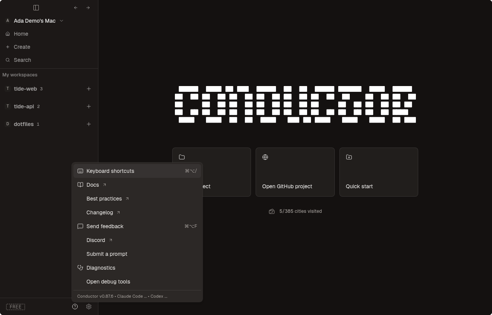

Conductor 0.87.6 reference, before, and rebuilt OpenConductor. Stone dark · 1280 × 820 · Reason Cloud.
Only the Help CSS uses the corrected popover tokens and ring. This is not a whole-screen or installed-macOS parity claim.

The same two-sample assertion failed before and passed after. The fresh build, color lint, and 53 focused Help and palette tests passed. The bounded preview is stopped.
REA reference capture ev_6827aa14339c210296dfb9f46b81c93bd7e082edb74e05326631595007638c59. The reference JavaScript and CSS hashes match the recorded real-app assets. The after image was captured in visible Chromium after rebuilding.
The reference includes Discord and three projects. OpenConductor has different branding and the fixture contains one project. Nothing was normalized away. Whole-screen pixels still differ.
The light attempt was rejected because the fixture did not persist its theme update. Projects parity and keyboard navigation are not established by these screenshots. Native rendering, external launches, and clipboard behavior remain unverified.